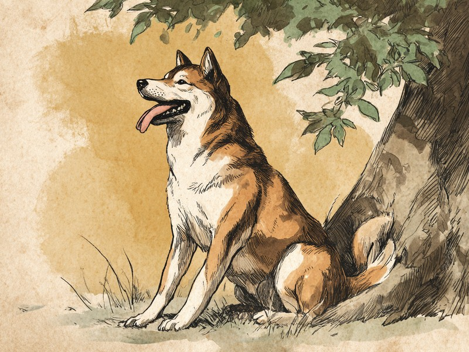

夏の散歩の帰り道、舌を出して「ハアハア」と息をする犬の姿はおなじみです。実はあれ、犬なりの「汗のかき方」なのです。 Dogs pant in summer to cool down — here's how it works.
🔍 ちょっと寄り道:動物の行動には理由があるように、人の性格にも傾向があります。気になった方は性格診断(MBTI)も覗いてみてください。
舌を出して「ハアハア」——それは「パンティング」という自然な行動
犬の「ハアハア」は「パンティング」と呼ばれる行動で、汗をかく代わりに体温を下げるための、ごく自然なしくみなのです。口を大きく開けて舌を出し、浅く速い呼吸を繰り返すこの姿は、暑い日や運動のあとによく見られます。苦しそうに見えて心配になるかもしれませんが、人間が暑いときに汗をかくのと同じように、犬にとってパンティングは、体に備わった「冷却装置」のスイッチを入れている状態なのです。
犬の汗腺は、足の裏にしかない
答えを先に言うと、犬の汗腺は足の裏や肉球のまわりなど、ごく限られた場所にしかなく、人間のように全身で汗をかくことができないのです。人間は全身に汗腺があり、皮膚から出た汗が蒸発するときに熱を奪ってもらうことで体温を下げています。ところが犬は、汗腺の場所が限られているうえに全身が毛でおおわれていることもあり、人間のように「体じゅうから汗をかいて涼む」という方法が使えないのです。
出典: Cornell University College of Veterinary Medicine, Riney Canine Health Center, "Heatstroke: A medical emergency" vet.cornell.edu
唾液を蒸発させて、気化熱で体を冷やす
犬は舌や口の中の唾液を蒸発させ、そのときに生まれる「気化熱」を利用して体の熱を外へ逃がしているのです。水分が蒸発するときには、まわりから熱を奪う「気化熱」が生まれます。パンティングで舌を出すのは、口の中や舌の表面にある唾液を空気にさらして、この蒸発を起こすためです。呼吸が普段よりずっと荒く速い「ハアハア」になるのは、口の中を通る空気の流れを増やして蒸発を促し、冷却効果を高めるため。ハアハアの回数が多いほど、犬は一生懸命に体を冷やしている、というわけです。
普段のハアハアと、熱中症のサインはどう見分ける?
見分ける目安は、涼しい場所で休ませてもハアハアがおさまらないか、よだれの量や歯ぐきの色、ふらつきといった様子が伴うかどうかです。暑い日や運動のあとの通常のパンティングは、日陰で休んだり水を飲んだりすれば、しだいに落ち着いていきます。一方で、涼しい場所に移して休ませても激しい呼吸がおさまらない、よだれの量が異常に多い、歯ぐきの色がいつもと違う、足元がふらつく、ぐったりして反応が鈍いといった様子が見られる場合は、熱中症のサインの可能性があります。特にパグやフレンチ・ブルドッグのような短頭種は、鼻から喉にかけての空気の通り道が狭く、パンティングによる冷却効果が出にくいため、通常の犬種よりも熱がこもりやすい傾向があると言われています。シニア犬や肥満気味の犬も同様に注意が必要です。これらのサインに気づいたら様子見はせず、体を冷やしながら早めに動物病院を受診してください。
犬は肉球のまわりから汗をかくため、暑い日や緊張しているときに、フローリングに湿った小さな足跡が残ることがあります。もし見つけたら、それは犬がちゃんと「汗をかいている」証拠です。
ミニクイズ:犬は人間と同じように全身から汗をかいて涼む?(タップして答えを見る)
こたえ×。犬の汗腺は足の裏など、ごく限られた場所にしかありません。そのため唾液を舌や口の中で蒸発させ、そのときに生まれる気化熱で体温を下げています。